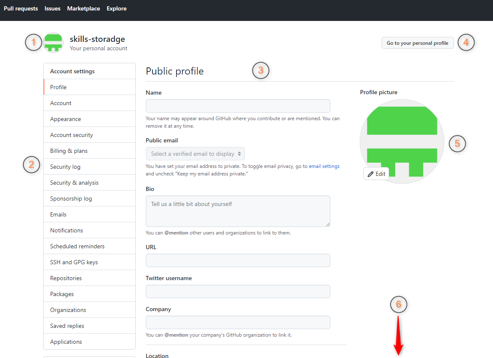

После выбора меню Settings, вам откроется вот такая страница:

СТРАНИЦА ИЗСЕНИЛАСЬ! ПЕРЕДЕЛЫВАЙ СКРИНШОТЫ! ПЕРЕПИСЫВАЙ ШАГ!
Поздравляем! Это и есть страница настроек вашего аккаунта 
Как вы видите, на ней есть много чего:
-
Информация о том, «кто вы и что вы» – то есть автоматически сгенерированный логотип и имя вашего профиля,
которые расположены в левом верхнем углу страницы.
-
Все настройки вашего аккаунта сгруппированы по категориям. Меню категорий располагается слева на странице.
-
По центру расположены сами настройки, которые будут меняться, в зависимости от того, какую категорию вы выбрали.
-
Есть кнопка, которая позволяет быстро перейти на страницу вашего профиля.
-
Справа вам еще раз показывают ваш логотип крупным планом.
-
И внизу страницы будет располагаться кнопка для сохранения настроек,
если вы что-то измените
(не поместилась в screenshot) – ПЕРЕПИШИ И Добавь СРИНШОТ с НОПКОЙ!